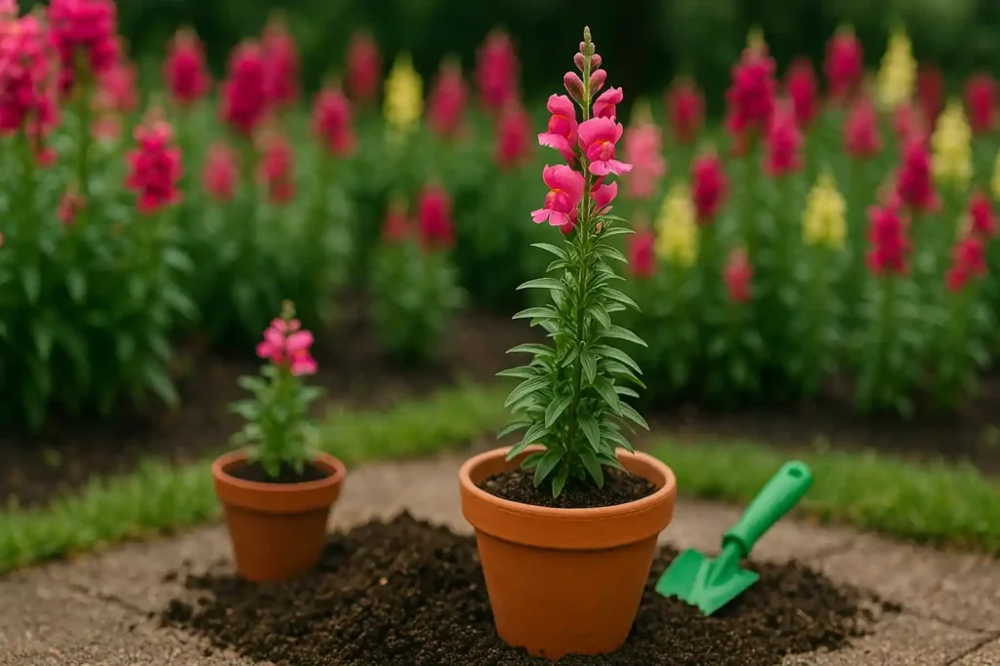

⚪ Identificação da Planta
Nome científico: Antirrhinum majus
Nome popular: Boca de Leão
Família botânica: Plantaginaceae
Origem: Região do Mediterrâneo
Ciclo de vida: Perene ou cultivada como anual
Altura: 20 a 80 cm
Luminosidade: Sol pleno ou boa luminosidade
Cor das flores: Branco, amarelo, rosa, vermelho, laranja e outras variedades.
Vaso na Horta Escolar Viva: ⚪ Branco
🌿 Características
A Boca de Leão é uma planta ornamental muito apreciada pela beleza de suas flores agrupadas em hastes, apresentando um formato curioso que lembra uma pequena boca quando observada de perto.
Suas diferentes cores e formas despertam a curiosidade dos estudantes, tornando-se uma excelente planta para atividades de observação da biodiversidade e educação ambiental.
☀️ Como Cultivar
A Boca de Leão gosta de ambientes iluminados e pode ser cultivada em vasos, canteiros e jardins escolares.
- ☀️ Prefere sol pleno ou locais com boa luminosidade.
- 💧 Necessita de regas regulares, mantendo o solo úmido sem encharcar.
- 🌱 Desenvolve-se melhor em solo fértil e bem drenado.
- 🌿 Pode ser cultivada em vasos e espaços educativos.
A retirada das flores secas ajuda a manter a planta saudável e pode estimular novas florações.
🐝 Importância para a Biodiversidade
As flores da Boca de Leão podem atrair abelhas, borboletas e outros insetos polinizadores, contribuindo para a manutenção da biodiversidade no jardim.
Na Horta Escolar Viva, essa flor auxilia os estudantes a compreenderem a importância das plantas ornamentais na criação de ambientes mais vivos e equilibrados.
🌼 Você Sabia?
O nome Boca de Leão surgiu porque suas flores possuem um formato que lembra a boca de um pequeno leão quando são pressionadas suavemente.
Além de sua beleza, essa planta é muito utilizada em jardins por causa da variedade de cores de suas flores.
📱 Conheça mais sobre a Boca de Leão
Aponte a câmera do celular para o QR Code e descubra mais informações sobre esta flor.